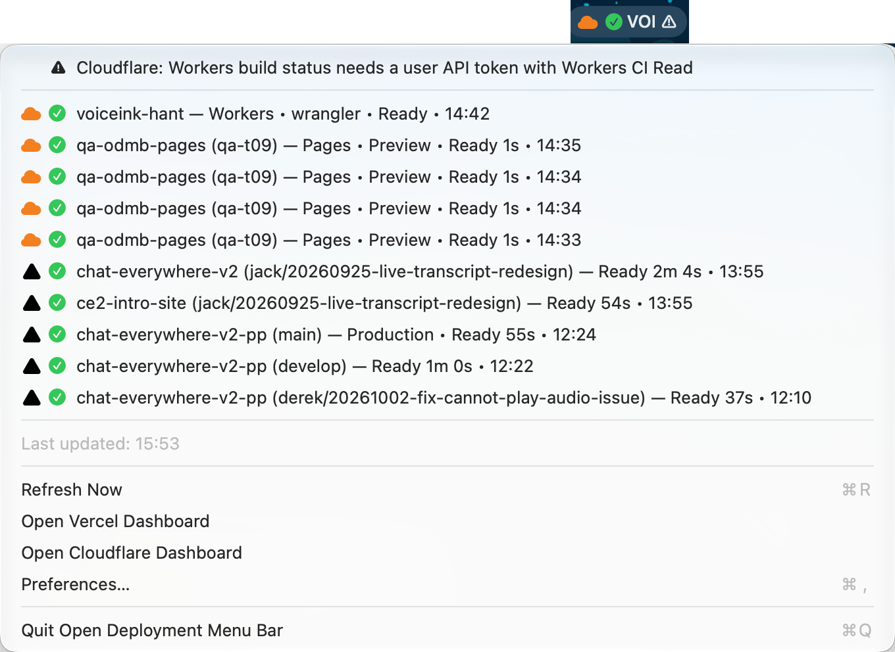

Vercel and Cloudflare deployments in your macOS menu bar
Free and open source. Shows Vercel, Cloudflare Pages and Cloudflare Workers deployments with their build status.

Features
Vercel and Cloudflare
Vercel deployments, Cloudflare Pages deployments and Cloudflare Workers deployments in one menu. Workers rows include Workers Builds status when the token allows it.
Status at a glance
The menu bar shows the newest deployment with ▲ (Vercel) or ☁ (Cloudflare) and a state icon; in the menu, Cloudflare rows use an orange ☁. ⚠ means one platform has a problem while the other still works.
Filters and layouts
Pick scopes, accounts and projects from checkbox lists, filter by branch, environment and state, and sort the menu by time or group it by platform.
Keychain and rate limits
Tokens live in the macOS Keychain. Cloudflare polling re-checks only in-progress rows between full refreshes and pauses when Cloudflare returns 429.
How to Get Started
1. Download and install
Download the latest release, unzip it and move the app to your Applications folder.
2. Add a Vercel token
Create a token at Vercel Account Settings → Tokens and paste it on the Vercel tab of Preferences. Then choose scopes and projects from the checkbox lists, or keep all of them.
3. Add a Cloudflare token
Create a Cloudflare API token with Account Settings Read, Cloudflare Pages Read and Workers Scripts Read, and paste it on the Cloudflare tab. Account-owned tokens work for Pages and Workers deployments.
For Workers Builds status, use a user API token that also has Workers CI Read. Without it, Workers rows appear without build status and the menu bar shows ⚠.
4. Tune refresh intervals
Vercel refreshes every 15 seconds, or every 2 seconds while building. Cloudflare does a full refresh every 30 seconds and re-checks in-progress rows every 5 seconds. Cloudflare allows 1200 API requests per 5 minutes per user, so choose specific accounts and projects if you have many.
FAQ
Why do my Workers rows have no build status?
The Workers Builds API needs a user API token with Workers CI Read. Account-owned tokens still list Workers deployments, but without build status.
What does ⚠ in the menu bar mean?
One platform failed (token, permission, network or a Cloudflare rate limit) while the app still has data to show. Open the menu to read the banner.
Where are my tokens stored?
In the macOS login Keychain. A Vercel token saved by an earlier version is moved there automatically on first launch.
Requirements
- macOS 13.0 or later
- A Vercel API token, a Cloudflare API token, or both
Open Source
Open Deployment Menu Bar is open source under the MIT License. View the source, report issues or contribute on GitHub. It is a fork of andrewk17/vercel-deployment-menu-bar.